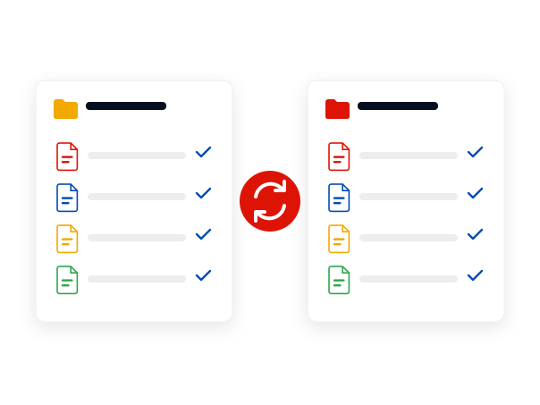

Cloud Sync Handbook
Mega desktop app: what it syncs, what it costs and how to get it
The Mega desktop app keeps folders on a Windows, macOS or Linux computer in step with an encrypted Mega cloud drive. This handbook covers the current version, the free 20 GB plan, the paid plans, the requirements and the command line client.
Free account with 20 GB. Paid plans add storage.
Key facts
- Current version6.7.0.3
- Release tagged2026-10-26
- SystemsWindows, macOS, Linux
- Free plan20 GB, no credit card
- Sync modelTwo way
- Checked2026-11-06
On this page
The Mega desktop app is the official sync and backup client for Mega cloud storage on Windows, macOS and Linux. It mirrors chosen folders in both directions between the computer and the cloud drive. The current release is 6.7.0.3 from 26 October 2026, and a free account includes 20 GB of encrypted storage.
This is an independent guide, not Mega's website. Buttons lead to the official Mega site and may be affiliate links; if they are, the price you pay does not change. Facts were checked on 6 November 2026 against Mega's public GitHub repositories and its App Store listing.
What the Mega desktop app does
The Mega desktop app is the official sync and backup client for Mega cloud storage. You pair folders on the computer with folders in your cloud drive, and the app copies changes in both directions: a file renamed, moved or deleted on one side is renamed, moved or deleted on the other. Its Settings dialog has a Syncs tab and a separate Backups tab.
The current release is 6.7.0.3, tagged on 26 October 2026 for Windows, macOS and Linux. If you only want the installer, go to the download page, which lists the version, the supported systems and the install steps. If you are still deciding, the review weighs what Mega documents against what it leaves out.
A free account comes with 20 GB of encrypted storage and needs no credit card. Paid plans are covered on the pricing page. Before installing on an older computer, read the system requirements: the app needs Windows 10, macOS 10.15 or a supported Linux distribution.
Two more pages go further. One shows how to schedule backups from the command line with MEGAcmd, Mega's terminal client. The other lists alternatives to Mega with their free storage and encryption models.

Where these facts come from
Mega's own website could not be read automatically, so this handbook was compiled from material Mega publishes elsewhere: the README and release notes of its public MEGAsync repository on GitHub, the MEGAcmd user guide, and the text of Mega's own App Store listing. All were read on 6 November 2026. Where those sources are silent, the page says so instead of guessing. Web prices from Mega's pricing page were not read and are not quoted.

Twenty free gigabytes and a client for three operating systems. Know that a sync mirrors deletions before you rely on it.
Pages in this handbook
Current version, supported systems, what the free account includes and four install steps.
What the app does, the limits Mega states and a score based on published facts.
The free 20 GB plan, the paid plan names and which prices could be confirmed.
Minimum Windows, macOS and Linux versions from Mega's README.
Release notes for 6.7.0.3 and the version lines before it.
Scheduled backups and two way syncs with MEGAcmd.
Six other cloud storage services and how they differ.
Version and platforms at a glance
| Item | Value |
|---|---|
| Current desktop version | 6.7.0.3, tagged 26 October 2026 |
| Windows | Windows 10 or later, Windows Server 2019 or later |
| macOS | 10.15 Catalina or later |
| Linux, official support | Debian, Ubuntu, Mint, Fedora, CentOS |
| Free storage | 20 GB |
| Source code | Public on GitHub |
Get the desktop app from Mega
The installer for Windows, macOS and Linux is on the official Mega site. A free account with 20 GB is enough to start.
Windows Windows 10 or later, Windows Server 2019 or later
macOS 10.15 Catalina or later
Linux Debian, Ubuntu, Mint, Fedora, CentOS
Frequently asked questions
What is the Mega desktop app?
It is Mega's official client for Windows, macOS and Linux. It syncs chosen folders in both directions between a computer and a Mega cloud drive and also offers backups.
Is the Mega desktop app the same as MEGAsync?
Yes. MEGAsync is the name of the app's public source code repository on GitHub, which Mega describes as the development history of its official desktop app.
What is the latest version of the Mega desktop app?
Version 6.7.0.3, tagged on 26 October 2026 for Windows, macOS and Linux. It added a tool to capture, annotate and share screenshots.
How much free storage does Mega give?
Mega's own app listing states 20 GB of encrypted cloud storage on the free plan, with no credit card required.
Does Mega work on Linux?
Yes. Mega officially supports Debian, Ubuntu, Mint, Fedora and CentOS, and its README says prebuilt packages exist for other distributions.